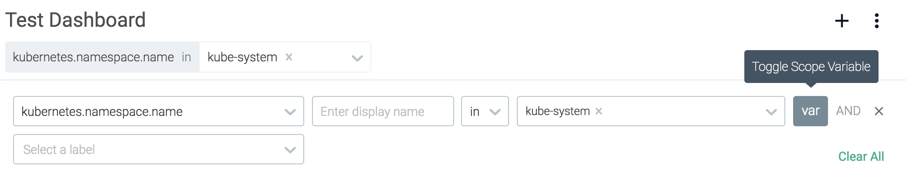
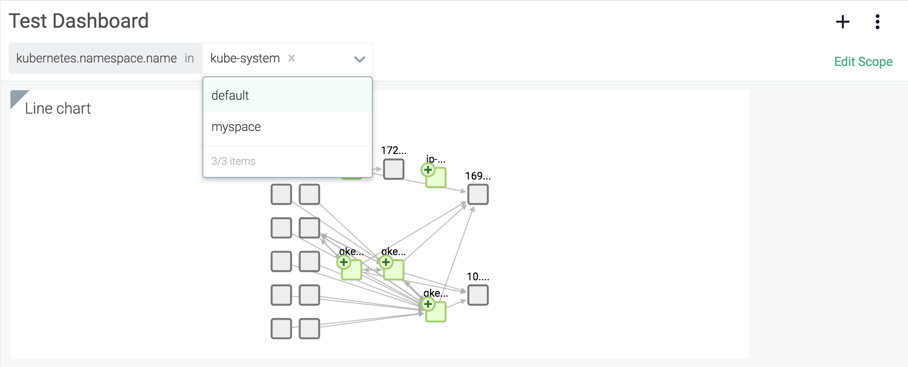
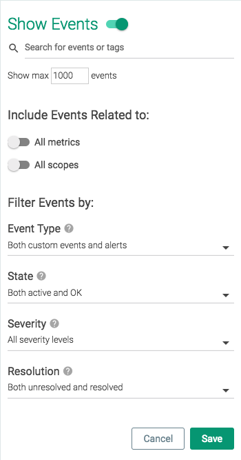

Dashboards
Sysdig users can create customized dashboards to display the most useful/relevant views and metrics for the infrastructure in a single location. Each dashboard is comprised of a series of panels configured to display specific data in a number of different formats:
 |
These sections cover how dashboards and panels are organized and managed.
Contents
Scope
Dashboard and panel scope defines what data is valid for aggregation and display within the dashboard. Scope can be set at a dashboard-wide level, or overridden for individual panels, by any user type except for View Only users.
The current scope is displayed in the top left-hand corner of the module screen:
 |
Note
For more information on how scopes work, refer to the Grouping, Scoping, and Segmenting Metrics documentation.
Configure Dashboard Scope
To configure the scope of an existing dashboard:
From the
Dashboardmodule, select the relevant dashboard from the dashboard list.Click the
Edit Scopelink in the top right of the module screen:Open the first level drop-down menu.
Select the first level label either by clicking the desired label, or searching for the label, then clicking it.
Define how the value relates to the label, and define the value.
Optional: Dashboard Templating.
Note
Dashboard scope values can be defined as variables, allowing users to create a template, and use one dashboard for multiple outputs. For example, in the image below, the
kubernetes.namespace.namelabel is set as a variable: Once saved, the dashboard has multiple values that can be displayed:
 Optional: Add additional label/value combinations to further refine the scope.
Click the
Savebutton to save the new scope, or click theCancelbutton to revert the changes.Note
To reset the dashboard scope to the entire infrastructure, or to update an existing dashboard's scope to the entire infrastructure, open the first scope drop-down menu and select
everywhere.
Configure Panel Scope
To configure the scope of an existing dashboard panel:
From the
Dashboardmodule, select the relevant dashboard from the dashboard list.Hover the cursor over the desired panel, and select the
Edit(pencil) icon:Click the
Override Dashboard Scopelink to enable a custom panel scope.Note
To return an individual panel scope to the default dashboard scope, click the
Default to Dashboard Scopelink, and save the changes.Open the
Scopedrop-down menu.Either select the new scope, or search for the desired scope, and then select it.
Click the
Savebutton to confirm the changes.
Note
Panels that have a custom scope (a different scope to the overall dashboard) are marked with a shaded corner:
 |
Dashboard Management
Dashboard Organization
Dashboards are organized into three main groups:
My Dashboards: Dashboards created by the current user.
My Shared Dashboards: Dashboards created by the current user, and shared with other users.
Dashboards Shared With Me: Dashboards created by other users, and shared with the current user.
Set a Default Dashboard
A default dashboard can be configured by setting the default entry point for a team, unifying a team's Sysdig Monitor experience, and allowing users to focus their immediate attention on the most relevant information for them. For more information on configuring a default entry point, refer to the Configure an Entry Page or Dashboard for a Team section of the Sysdig Platform documentation.
Display Dashboard Specific Events
Sysdig Monitor allows users to configure dashboards to display infrastructure events relevant to a dashboard's panels within the panels themselves. This allows users an even more in-depth view of the status of their environment. To configure how events are displayed:
On the
Dashboardtab, select the relevant dashboard from the dashboard list.Click the Dashboard Settings (three dots) icon, and select Events:

Enable the
Show Eventsslider to show events in the dashboard panels. Configure the available parameters, and click the
Closebutton.
Option | Description |
|---|---|
Event or Tag Search Bar | Defines specific events, or a scope of events, to display. |
Show max | Defines the maximum number of events to display in a panel. |
Include events related to | Determines whether the range of events displayed includes those for all metrics/scopes or not. |
Event Type | Display either custom events, alerts, or both. |
State | Determines the state of events displayed. |
Severity | Determines whether only high severity events, or all events are displayed. |
Resolution | Determines whether all events, or only resolved/unresolved ones are displayed. |
Save and Restore Dashboards with Scripts
Sysdig Monitor provides users the ability to save existing dashboards to a locally controlled file, and create new dashboards identical to the ones previously saved. This can be done via Sysdig's Python client library example scripts. The save script stores all current dashboards for the active account in a .zip archive, while the restore script adds all dashboards in the archive to the list of dashboards.
Warning
Restoring dashboards will not override the user's existing dashboards. Instead, new dashboards will be added to the list.
If this script is used in a strictly backup/restore capacity, dashboards will need to be deleted manually from the account, either before or after the restore action is completed.
Note
The restore script does not have to target the same account as the save script. This allows dashboards to be saved from one user, and restored to multiple users.
Saving and restoring the scripts has the following prerequisites:
Python 2.x (2.7.x)
pipversion 1.3 or later.Note
pipis installed as part of the Python package for versions 2.7 and later.virtualenv (recommended)
The library and example scripts are available in the Sysdig GitHub repository: https://github.com/draios/python-sdc-client.
Download the Scripts
To configure the local environment for the scripts:
Either download a .zip archive of the python client from the repository and unpack it, or clone the repository:
sysdig@user:~$ git clone https://github.com/draios/python-sdc-client.git
In a terminal, navigate to the directory.
Configure the Python environment as necessary.
Note
If you are unfamiliar with Python, Sysdig recommends setting up via
pip&virtualenv:sysdig@user:~$ mkdir -p ~/workingdir/venv # declare where you want all python tools installed sysdig@user:~$ sudo virtualenv ~/workingdir/venv # prepare the workspace -- this may download several things sysdig@user:~$ source ~/workingdir/venv/bin/activate # cause all python tools to use this workspace from now on (venv) $ # at this point the prompt reminds us we're in the virtual environment (venv) $ pip install . # install the sdcclient library into the venv
The sdcclient module is now available to Python.
Save All Dashboards with a Python Script
To save the dashboards:
In a terminal, access the virtual environment set up in Download the Scripts.
Run the script, replacing
API_TOKENwith the API token for the relevant user, andSAVED_DASHBOARDS.ZIPwith the desired name of the zip file:Note
See Retrieve the Sysdig API Token for details.
(venv) $ sudo python examples/download_dashboards.py API_TOKEN SAVED_DASHBOARDS.ZIP Dashboard name: JVM, # Charts: 5 Finished writing dashboard data in zip format to SAVED_DASHBOARDS.ZIP
Restore Dashboards with a Python Script
To restore dashboards from a .zip archive
In a terminal, access the virtual environment set up in Download the Scripts.
Run the script, replacing
API_TOKENwith the API token for the relevant user, andSAVED_DASHBOARDS.ZIPwith the correct zip file:(venv) $ sudo python examples/restore_dashboards.py API_TOKEN SAVED_DASHBOARDS.ZIP Dashboards pushed. (venv) user@server:~/python-sdc-client$
Dashboard Creation
There are two parts to creating a dashboard - creating the dashboard itself, and creating the panels that display the information. For details instructions on these steps, refer to: